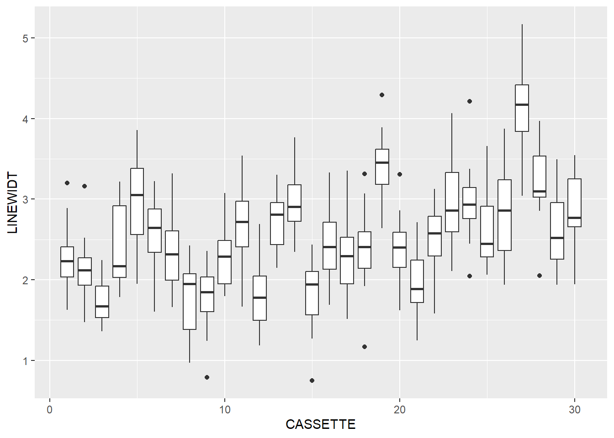
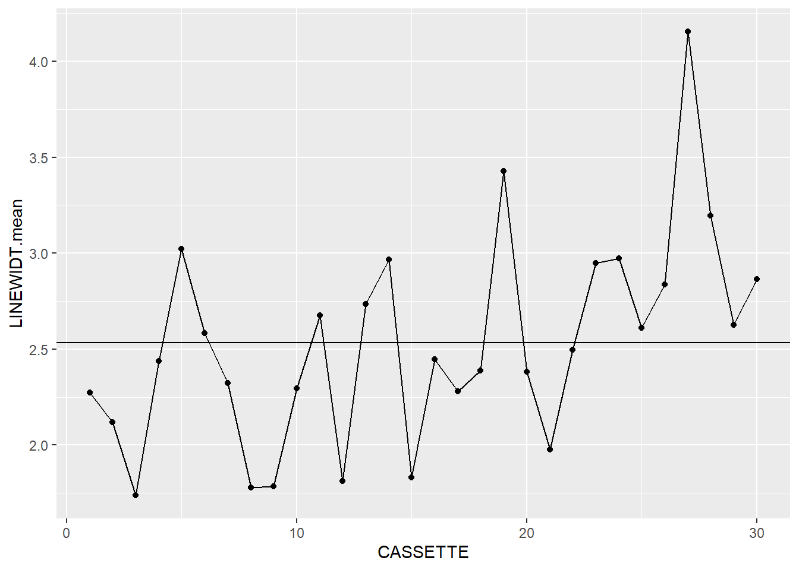
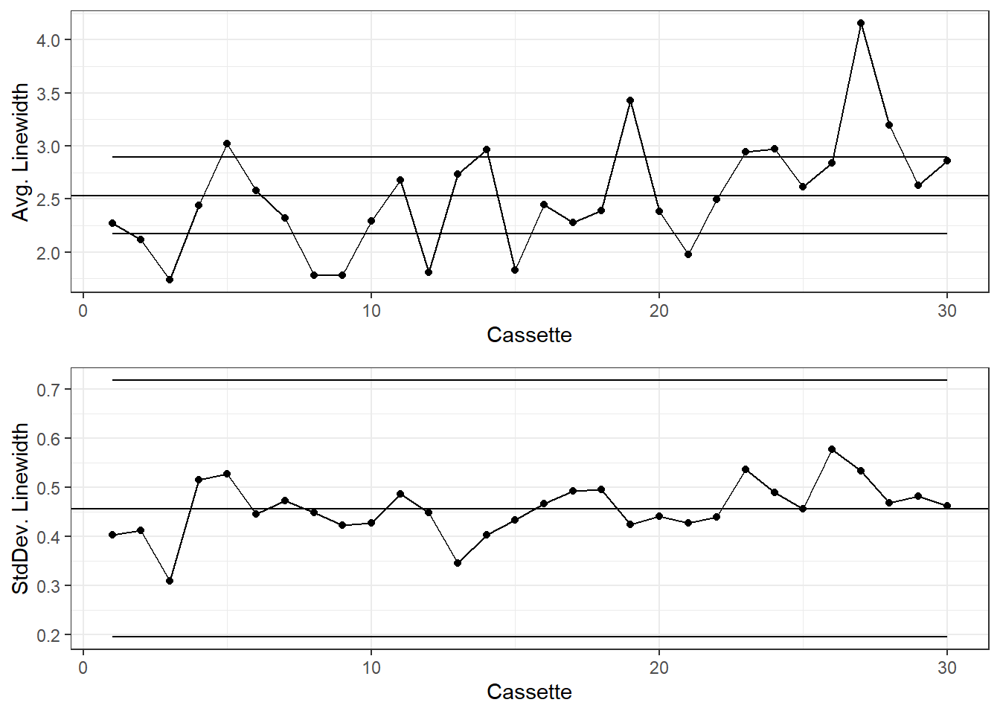
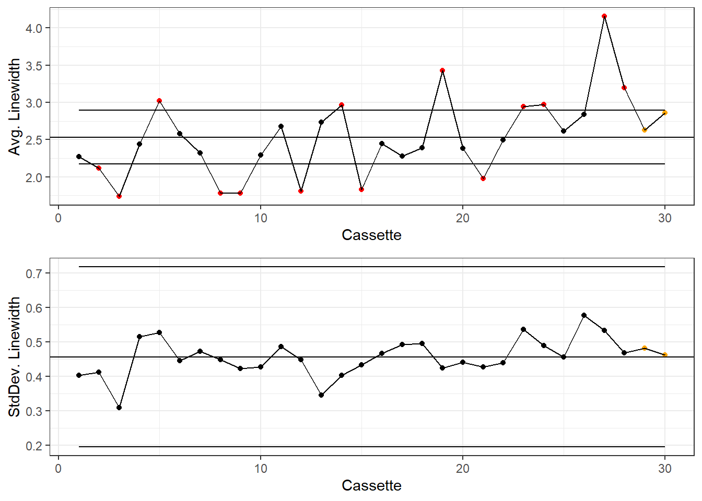
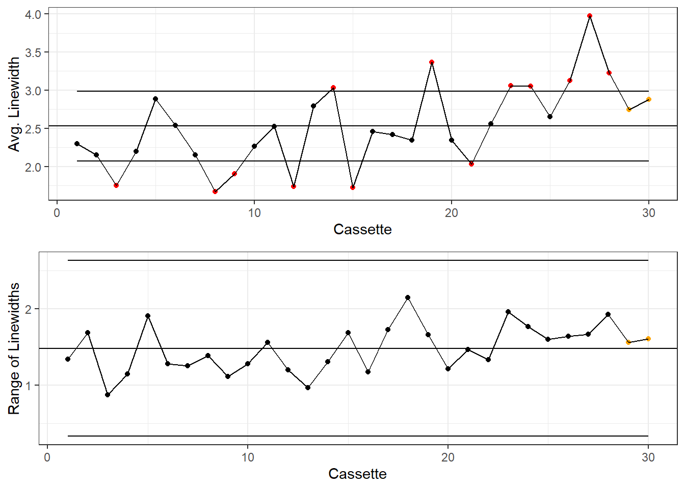
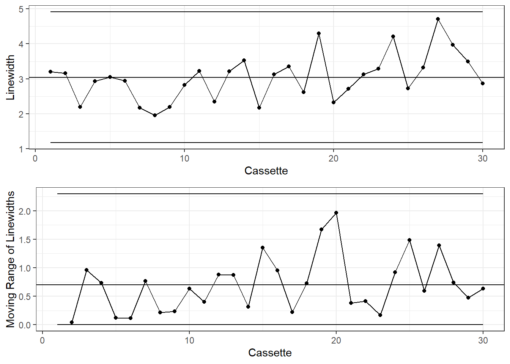

library(readr)
# Load the link, or download the .DAT file and substitute in the next step.
fileLitho <- read_file("https://www.itl.nist.gov/div898/handbook/datasets/LITHOGRA.DAT")
# read
dataLitho <- read_fwf(
fileLitho,
col_positions = fwf_widths(
c(7, 7, 7, 12, 7, 12),
col_names=c("CASSETTE", "WAFER", "SITE",
"LINEWIDT", "RUNSEQ","LINEWIDT_2")
),
skip=25
) |>
subset(select=-c(LINEWIDT_2))Process Control Charts
Process Control Charts are great for analyzing any sort of process and identifying shifts in the process and outliers. They are a fundamental part of the Six Sigma program.
There are R libraries for making these charts:
But I prefer to do them from scratch for more customization.
There are 3 main types of SPC Charts:
- X-Bar and S (Std. Dev, >10 samples per run/group)
- X-Bar and R (run range, <= 10 per run/group)
- X-Bar and M (change from run to run, when there is only 1 measure per group)
A great resource for learning about Process Control Charts and other statistical methods is the NIST Handbook, which is referenced heavily for this post.
Not only does it provide information and formulas, but data too. I will be using the LITHOGRA.DAT data for the charts in this post.
X-bar and S Charts
Lithograph Data
Let’s look at an example of creating a set of X-bar and S charts. We’ll use the Lithograph dataset from the NIST handbook. This data measures the width of lines etched in 5 locations on silicon wafers. There are 3 wafers per cassette, and 30 cassettes for a grand total of 450 measurements.
There are many different approaches we could take to how to group this data, but for now, lets consider the cassette as our “run” and examine the distribution of line widths for each cassette, regardless of the wafer number (1, 2, or 3) or the location of the line.
Reading the data
We’ll use readr::read_fwf() to read this data since it is in a fixed-width format. We’ll also drop the last column as it is not necessary (see the text in the file header for more details).
head(dataLitho)# A tibble: 6 × 5
CASSETTE WAFER SITE LINEWIDT RUNSEQ
<dbl> <dbl> <dbl> <dbl> <dbl>
1 1 1 1 3.20 1
2 1 1 2 2.25 2
3 1 1 3 2.07 3
4 1 1 4 2.42 4
5 1 1 5 2.39 5
6 1 2 1 2.65 6summary(dataLitho) CASSETTE WAFER SITE LINEWIDT RUNSEQ
Min. : 1.0 Min. :1 Min. :1 Min. :0.7465 Min. : 1.0
1st Qu.: 8.0 1st Qu.:1 1st Qu.:2 1st Qu.:2.0505 1st Qu.:113.2
Median :15.5 Median :2 Median :3 Median :2.4533 Median :225.5
Mean :15.5 Mean :2 Mean :3 Mean :2.5323 Mean :225.5
3rd Qu.:23.0 3rd Qu.:3 3rd Qu.:4 3rd Qu.:2.9697 3rd Qu.:337.8
Max. :30.0 Max. :3 Max. :5 Max. :5.1687 Max. :450.0 Explore the data
The first step of any data analysis, even when you have a clear goal in mind, should be to explore the data and get a feel for what is going on in there. Let’s load ggplot (we’ll need it later anyway) and poke around.
library(ggplot2)Let’s use box-and-whisker plots to check out the groups.
dataLitho |>
ggplot(aes(x=CASSETTE, y=LINEWIDT, group=CASSETTE)) +
geom_boxplot()
modelCassette <- lm(LINEWIDT~CASSETTE, data=dataLitho)
summary(modelCassette)
Call:
lm(formula = LINEWIDT ~ CASSETTE, data = dataLitho)
Residuals:
Min 1Q Median 3Q Max
-1.76979 -0.44244 -0.03813 0.40676 2.26966
Coefficients:
Estimate Std. Error t value Pr(>|t|)
(Intercept) 2.03801 0.06160 33.086 <2e-16 ***
CASSETTE 0.03189 0.00347 9.191 <2e-16 ***
---
Signif. codes: 0 '***' 0.001 '**' 0.01 '*' 0.05 '.' 0.1 ' ' 1
Residual standard error: 0.6371 on 448 degrees of freedom
Multiple R-squared: 0.1586, Adjusted R-squared: 0.1568
F-statistic: 84.47 on 1 and 448 DF, p-value: < 2.2e-16It looks like there is some change in line width as the process goes on. This is exactly the sort of thing that SPC charts look for.
Initial SPC Calculations
The first step of creating the SPC charts is to find the mean, standard deviation, and count of measurements in each group. This can be done in base R using aggregate() and transform(), or with dplyr functions. Both methods are shown below:
dataLithoSumm <- aggregate(
# group LINEWIDT by CASSETTE
LINEWIDT~CASSETTE,
data=dataLitho,
# Calculate group mean, sd, and counts
FUN=function(x) c(mean=mean(x),
sd=sd(x),
count=length(x))
)
# We get a funky data.frame from aggregate with 1 normal column and 1 matrix column.
# do.call will expand the matrix into separate columns.
# It's a bit like nest and unnest in dplyr.
dataLithoSumm <- do.call(data.frame, dataLithoSumm)
dataLithoSumm <- transform(
dataLithoSumm,
# Now we calculate the mean of means (x-bar-bar in the NIST handbook)
process.mean = mean(LINEWIDT.mean),
# and the mean of the standard deviations
process.sd = mean(LINEWIDT.sd)
)With some nesting and use of R’s native pipe, this could all be run as one command, but it starts to look messy, and code legibility is important in itself.
library(dplyr)
dataLithoSumm <- dataLitho |>
# first set the group
group_by(CASSETTE) |>
# Mean, SD, and Count for each run
summarise(LINEWIDT.mean = mean(LINEWIDT),
LINEWIDT.sd = sd(LINEWIDT),
LINEWIDT.count = n()) |>
# Ungroup the data for the next step
ungroup() |>
# Overall process Mean and SD
mutate(
process.mean = mean(LINEWIDT.mean),
process.sd = mean(LINEWIDT.sd)
) One of the great things about the tidyverse libraries is the ability to do many separate steps in a string of easy to understand commands.
The only difference in the output is that base R produces a data.frame and dplyr produces a tibble, but a tibble is really just a data.frame with some extensions
Now that we have some summary data, let’s take a look at it:
dataLithoSumm |>
ggplot(aes(x=CASSETTE, y=LINEWIDT.mean)) +
geom_point() +
geom_line() +
geom_hline(aes(yintercept = process.mean))
dataLithoSumm |>
ggplot(aes(x=CASSETTE, y=LINEWIDT.sd)) +
geom_point() +
geom_line() +
geom_hline(aes(yintercept = process.sd))
It looks like we’re off to a good start. We’ve now got the makings of a pair of X-bar and S charts, so now we need to add the next layer.
Control Limits
For standard Shewhart control charts use a 3-sigma range, or +/- 3 standard deviations from the mean (the namesake of 6-Sigma). Technically, we do not know the true mean and standard deviation of the process, only the measured estimates. We account for this uncertainty with a weighting factor. There is a full explanation of this in the NIST Engineering Statistics Handbook.
To calculate the Control Limits, we’ll need the c\(_{4}\) parameter:
# C4 Function
c4 <- function(n) {
sqrt(2/(n-1)) * (factorial(n/2-1) / factorial((n-1)/2-1))
}Then we use this parameter to calculate the Upper and Lower Control Limits:
dataLithoSumm <- dataLithoSumm |>
transform(
# X-bar chart UCL & LCL
xBar.UCL = process.mean + 3 * process.sd /
(c4(LINEWIDT.count)*sqrt(LINEWIDT.count)),
xBar.LCL = process.mean - 3 * process.sd /
(c4(LINEWIDT.count)*sqrt(LINEWIDT.count)),
# S chart UCL & LCL
s.UCL = process.sd + 3 * (process.sd/c4(LINEWIDT.count)) *
sqrt(1 - c4(LINEWIDT.count)^2),
s.LCL = process.sd - 3 * (process.sd/c4(LINEWIDT.count)) *
sqrt(1 - c4(LINEWIDT.count)^2)
)dataLithoSumm <- dataLithoSumm |>
mutate(
# X-bar chart UCL & LCL
xBar.UCL = process.mean + 3 * process.sd /
(c4(LINEWIDT.count)*sqrt(LINEWIDT.count)),
xBar.LCL = process.mean - 3 * process.sd /
(c4(LINEWIDT.count)*sqrt(LINEWIDT.count)),
# S chart UCL & LCL
s.UCL = process.sd + 3 * (process.sd/c4(LINEWIDT.count)) *
sqrt(1 - c4(LINEWIDT.count)^2),
s.LCL = process.sd - 3 * (process.sd/c4(LINEWIDT.count)) *
sqrt(1 - c4(LINEWIDT.count)^2)
)There’s a lot of repetitive code up there, some of that could be condensed if desired. Also, since every group in this dataset has the same number of measurements, the upper and lower control limits for the X-bar and S charts are the same for each group. Of course the mean of means and mean of standard deviations, process.mean and process.sd, are also the same for each group. These could be calculated as standalone variables if desired. Just remember that you can only do that if every row has the same sample size, otherwise you do have to calculate the limits for each row.
Plotting the data
Now that we have the data, lets make these charts.
g1 <- dataLithoSumm |>
ggplot(aes(x=CASSETTE, y=LINEWIDT.mean)) +
geom_point() +
geom_line() +
geom_hline(aes(yintercept=process.mean)) +
geom_line(aes(y=xBar.UCL)) +
geom_line(aes(y=xBar.LCL)) +
labs(y="Avg. Linewidth", x="Cassette") +
theme_bw()
g2 <- dataLithoSumm |>
ggplot(aes(x=CASSETTE, y=LINEWIDT.sd)) +
geom_point() +
geom_line() +
geom_hline(aes(yintercept=process.sd)) +
geom_line(aes(y=s.UCL)) +
geom_line(aes(y=s.LCL)) +
labs(y="StdDev. Linewidth", x="Cassette") +
theme_bw()
gridExtra::grid.arrange(g1, g2)
Generally the X-Bar and S charts are shown together with the x-axes aligned.
If desired, the Western Electric Company Rules can be applied to this chart. I like to mainly focus on shifting averages and extreme outliers:
dplyr
dataLithoSumm <- dataLithoSumm |>
mutate(
# Is the point beyond +/- 3 sigma?
xBar.beyond = ifelse((LINEWIDT.mean > xBar.UCL | LINEWIDT.mean < xBar.LCL), 1, 0),
# Assign each point -1, 0, or 1 if it is below, at, or above the mean
xBar.position = ifelse(LINEWIDT.mean > process.mean, 1,
ifelse(LINEWIDT.mean < process.mean, -1, 0)),
# Then cumulatively sum these scores
xBar.csum = cumsum((xBar.position)),
# Use dplyr::lag to see if there are 7 or more consecutive points above or
# below the overall mean
xBar.lag = xBar.csum - lag(xBar.csum, 7, default = 0),
xBar.violatingRun = if_else(abs(xBar.lag)>=7, 1, 0),
xBar.color=if_else(xBar.beyond == 1, "Beyond Limits",
if_else(xBar.violatingRun==1, "Violating Run", "Normal")),
# Repeat for the standard deviation
s.beyond = ifelse((LINEWIDT.sd > s.UCL | LINEWIDT.sd < s.LCL), 1, 0),
s.position = ifelse(LINEWIDT.sd > process.sd, 1,
ifelse(LINEWIDT.sd < process.sd, -1, 0)),
s.csum = cumsum((s.position)),
s.lag = s.csum - lag(s.csum, 7, default = 0),
s.violatingRun = if_else(abs(s.lag)>=7, 1, 0),
s.color=if_else(s.beyond == 1, "Beyond Limits",
if_else(s.violatingRun==1, "Violating Run", "Normal"))
)I don’t know of a good way to emulate dplyr::lag() without some ugly code to shift row indexes around and then merge(df1, df2, all.x=TRUE).
colorsKey <- c("Beyond Limits"="red", "Violating Run"="orange", "Normal"="black")
g1 <- dataLithoSumm |>
ggplot(aes(x=CASSETTE, y=LINEWIDT.mean)) +
geom_point(aes(color=xBar.color)) +
geom_line() +
geom_hline(aes(yintercept=process.mean)) +
geom_line(aes(y=xBar.UCL)) +
geom_line(aes(y=xBar.LCL)) +
labs(y="Avg. Linewidth", x="Cassette") +
scale_color_manual(values = colorsKey) +
theme_bw() +
theme(legend.position = "none")
g2 <- dataLithoSumm |>
ggplot(aes(x=CASSETTE, y=LINEWIDT.sd)) +
geom_point(aes(color=s.color)) +
geom_line() +
geom_hline(aes(yintercept=process.sd)) +
geom_line(aes(y=s.UCL)) +
geom_line(aes(y=s.LCL)) +
labs(y="StdDev. Linewidth", x="Cassette") +
scale_color_manual(values = colorsKey) +
theme_bw() +
theme(legend.position = "none")
gridExtra::grid.arrange(g1, g2)
X-bar and R Charts
X-Bar and R charts are pretty similar to X-Bar and S charts, the just use Range instead of Standard Deviation. These charts are mostly used when groups are smaller than n=10. The Lithograph data has 15 measurements per cassette, but it will be fine to use as an example.
We’ll drop some of the data from the Lithograph dataset:
dataLithoSubset <- dataLitho |>
filter(WAFER < 3)Or use subset() for base R.
SPC Calculations
The calculations for the mean will be the same, but we’ll calculate Range instead of Standard Deviation.
dataLithoRange <- aggregate(
# group LINEWIDT by CASSETTE
LINEWIDT~CASSETTE,
data=dataLithoSubset,
# Calculate group mean, sd, and counts
FUN=function(x) c(mean=mean(x),
r=range(x)[2] - range(x)[1],
count=length(x))
)
# We get a funky data.frame from aggregate with 1 normal column and 1 matrix column.
# do.call will expand the matrix into separate columns.
# It's a bit like nest and unnest in dplyr.
dataLithoRange <- do.call(data.frame, dataLithoRange)
dataLithoRange <- transform(
dataLithoRange,
# Now we calculate the mean of means (x-bar-bar in the NIST handbook)
process.mean = mean(LINEWIDT.mean),
# and the mean of the standard deviations
process.range = mean(LINEWIDT.r)
)dataLithoRange <- dataLithoSubset |>
# first set the group
group_by(CASSETTE) |>
# Mean, SD, and Count for each run
summarise(LINEWIDT.mean = mean(LINEWIDT),
LINEWIDT.r = range(LINEWIDT)[2] - range(LINEWIDT)[1],
LINEWIDT.count = n()) |>
# Ungroup the data for the next step
ungroup() |>
# Overall process Mean and SD
mutate(
process.mean = mean(LINEWIDT.mean),
process.range = mean(LINEWIDT.r)
) Control Limits
For X-Bar and R charts, A\(_{2}\) is generally used instead of c\(_{4}\) for the X-Bar unbiased estimator, and D\(_{3}\) and D\(_{4}\) are used for the Range:
tablexBarR <- data.frame(
n=c(2:10),
a2 = c(1.880, 1.023, 0.729, 0.577, 0.483, 0.419, 0.373, 0.337, 0.308),
d3 = c(0, 0, 0, 0, 0, 0.076, 0.136, 0.184, 0.223),
d4 = c(3.267, 2.575, 2.282, 2.115, 2.004, 1.924, 1.864, 1.816, 1.777)
)Then we use this parameter to calculate the Upper and Lower Control Limits:
dataLithoRange <-
merge(dataLithoRange, tablexBarR,
by.x = "LINEWIDT.count", by.y = "n") |>
transform(
# X-bar chart UCL & LCL
xBar.UCL = process.mean + a2 * process.range,
xBar.LCL = process.mean - a2 * process.range,
# S chart UCL & LCL
r.UCL = process.range * d4,
r.LCL = process.range * d3
)dataLithoRange <- dataLithoRange |>
left_join(tablexBarR, by=c("LINEWIDT.count"="n")) |>
mutate(
# X-bar chart UCL & LCL
xBar.UCL = process.mean + a2 * process.range,
xBar.LCL = process.mean - a2 * process.range,
# S chart UCL & LCL
r.UCL = process.range * d4,
r.LCL = process.range * d3
)WECO Rules
dataLithoRange <- dataLithoRange |>
mutate(
xBar.beyond = ifelse((LINEWIDT.mean > xBar.UCL | LINEWIDT.mean < xBar.LCL), 1, 0),
xBar.position = ifelse(LINEWIDT.mean > process.mean, 1,
ifelse(LINEWIDT.mean < process.mean, -1, 0)),
xBar.csum = cumsum((xBar.position)),
xBar.lag = xBar.csum - lag(xBar.csum, 7, default = 0),
xBar.violatingRun = if_else(abs(xBar.lag)>=7, 1, 0),
xBar.color=if_else(xBar.beyond == 1, "Beyond Limits",
if_else(xBar.violatingRun==1, "Violating Run", "Normal")),
r.beyond = ifelse((LINEWIDT.r > r.UCL | LINEWIDT.r < r.LCL), 1, 0),
r.position = ifelse(LINEWIDT.r > process.range, 1,
ifelse(LINEWIDT.r < process.range, -1, 0)),
r.csum = cumsum((r.position)),
r.lag = r.csum - lag(r.csum, 7, default = 0),
r.violatingRun = if_else(abs(r.lag)>=7, 1, 0),
r.color=if_else(r.beyond == 1, "Beyond Limits",
if_else(r.violatingRun==1, "Violating Run", "Normal"))
)X-Bar and R Chart
colorsKey <- c("Beyond Limits"="red", "Violating Run"="orange", "Normal"="black")
g1 <- dataLithoRange |>
ggplot(aes(x=CASSETTE, y=LINEWIDT.mean)) +
geom_point(aes(color=xBar.color)) +
geom_line() +
geom_hline(aes(yintercept=process.mean)) +
geom_line(aes(y=xBar.UCL)) +
geom_line(aes(y=xBar.LCL)) +
labs(y="Avg. Linewidth", x="Cassette") +
scale_color_manual(values = colorsKey) +
theme_bw() +
theme(legend.position = "none")
g2 <- dataLithoRange |>
ggplot(aes(x=CASSETTE, y=LINEWIDT.r)) +
geom_point(aes(color=r.color)) +
geom_line() +
geom_hline(aes(yintercept=process.range)) +
geom_line(aes(y=r.UCL)) +
geom_line(aes(y=r.LCL)) +
labs(y="Range of Linewidths", x="Cassette") +
scale_color_manual(values = colorsKey) +
theme_bw() +
theme(legend.position = "none")
gridExtra::grid.arrange(g1, g2)
I and MR Charts
When the sample size is n=1, use the I and MR, or Individuals and Moving Range, chart. The Moving Range is the absolute difference between consecutive measurements.
Prepare the data
dataLithoMR <- dataLitho |>
# Filter down to one measurement per cassette
filter(WAFER == 1, SITE == 1) |>
mutate(
# Find the Moving Range
LINEWIDT.mr = abs(LINEWIDT - lag(LINEWIDT, 1)),
process.mean = mean(LINEWIDT),
process.mr = mean(LINEWIDT.mr, na.rm=T),
# 1.128 is the value for d2=1
xBar.UCL = process.mean + 3 * process.mr / 1.128,
xBar.LCL = process.mean - 3 * process.mr / 1.128,
# 3.267 is D4 when n=2, 0 is D3 when n=2
mr.UCL = process.mr*3.267,
mr.LCL = process.mr*0,
# Critical Limits for Individuals
xBar.beyond = if_else((LINEWIDT > xBar.UCL | LINEWIDT < xBar.LCL), 1, 0),
xBar.position = ifelse(LINEWIDT > process.mean, 1,
if_else(LINEWIDT < process.mean, -1, 0)),
xBar.csum = cumsum((xBar.position)),
xBar.lag = xBar.csum - lag(xBar.csum, 7, default = 0),
xBar.violatingRun = if_else(abs(xBar.lag)>=7, 1, 0),
xBar.color=if_else(xBar.beyond == 1, "Beyond Limits",
if_else(xBar.violatingRun==1, "Violating Run", "Normal")),
# Critical Limits for Moving Ranges
mr.beyond = if_else((LINEWIDT.mr > mr.UCL | LINEWIDT.mr < mr.LCL), 1, 0),
mr.beyond = if_else(is.na(mr.beyond), 0, mr.beyond),
mr.position = if_else(LINEWIDT.mr > process.mr, 1,
if_else(LINEWIDT.mr < process.mr, -1, 0)),
mr.position = if_else(is.na(mr.position), 0, mr.position),
mr.csum = cumsum(mr.position),
mr.lag = mr.csum - lag(mr.csum, 7, default = 0),
mr.violatingRun = if_else(abs(mr.lag)>=7, 1, 0),
mr.color=if_else(mr.beyond == 1, "Beyond Limits",
if_else(mr.violatingRun==1, "Violating Run", "Normal"))
) I and MR Charts
colorsKey <- c("Beyond Limits"="red", "Violating Run"="orange", "Normal"="black")
g1 <- dataLithoMR |>
ggplot(aes(x=CASSETTE, y=LINEWIDT)) +
geom_point(aes(color=xBar.color)) +
geom_line() +
geom_hline(aes(yintercept=process.mean)) +
geom_line(aes(y=xBar.UCL)) +
geom_line(aes(y=xBar.LCL)) +
labs(y="Linewidth", x="Cassette") +
scale_color_manual(values = colorsKey) +
theme_bw() +
theme(legend.position = "none")
g2 <- dataLithoMR |>
ggplot(aes(x=CASSETTE, y=LINEWIDT.mr)) +
geom_point(aes(color=mr.color)) +
geom_line() +
geom_hline(aes(yintercept=process.mr)) +
geom_line(aes(y=mr.UCL)) +
geom_line(aes(y=mr.LCL)) +
labs(y="Moving Range of Linewidths", x="Cassette") +
scale_color_manual(values = colorsKey) +
theme_bw() +
theme(legend.position = "none")
gridExtra::grid.arrange(g1, g2)